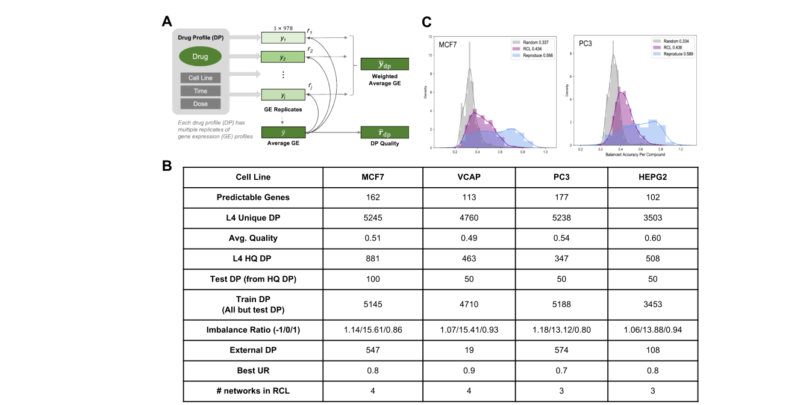
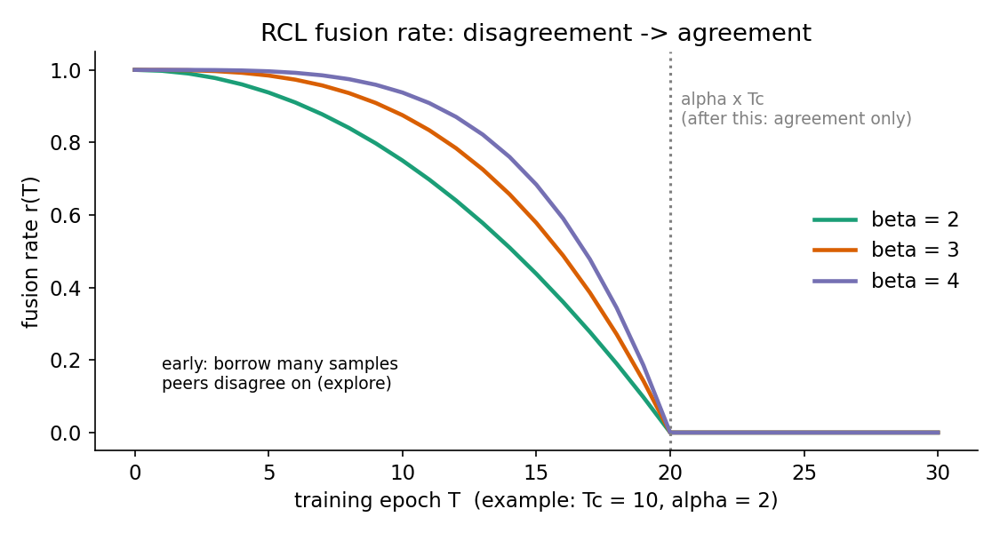
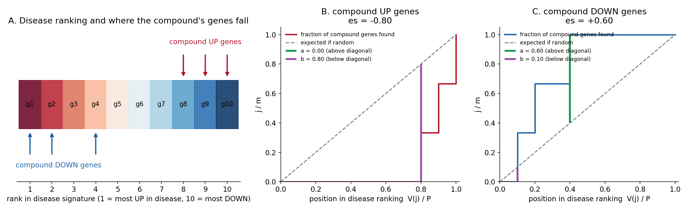
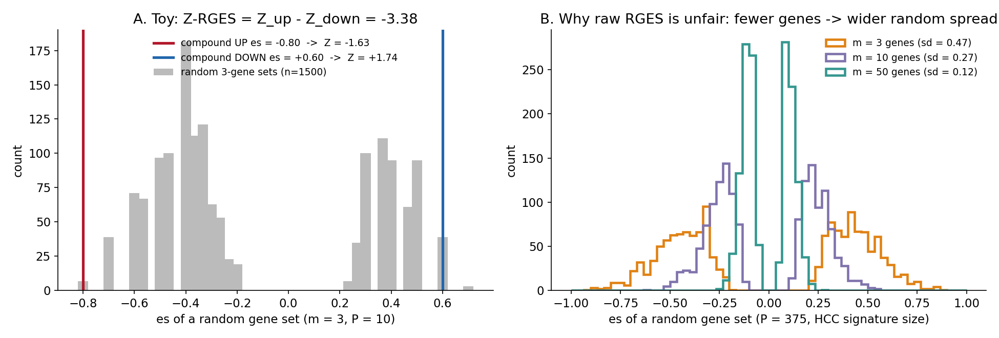
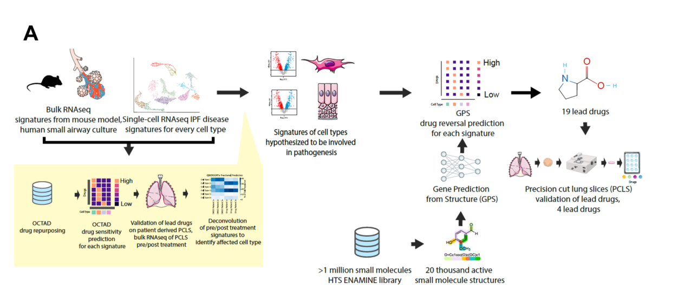

GPS Pipeline 따라가기
2026 Xing - GPS의 tool인 GPS가 처음부터 끝까지 어떻게 돌아가는지, 처음 보는 사람도 따라갈 수 있게 단계별로 풀어 쓴 설명서. 결과 요약은 논문 페이지에 있다.
읽는 법: 각 단계는 같은 순서로 되어 있습니다. 하는 일 → Input → Output → 쉽게 말하면 → 자세히 (수식, 설정값) → Toy example → 관련 그림
- 수식, 설정값은 논문 STAR Methods 기준입니다.
- Toy example과 “설명 그림”은 이해를 돕기 위해 직접 만든 것이고 논문 data가 아닙니다.
- 논문에 명시되지 않아 추론한 부분에는 (추정) 표시를 붙였습니다.
0. 전체 지도
flowchart TD subgraph TRAIN["학습 (한 번만)"] A["LINCS L1000 Phase I<br/>drug × gene Z-score"] --> B["Step 1 · Data 준비<br/>replicate 품질 가중 평균<br/>Z → up / none / down"] B --> C["Step 2–3 · GPS model 학습<br/>ECFP4 + GO → 3-class<br/>RCL로 noisy label 처리"] end subgraph PREDICT["예측"] D["Compound Library<br/>ZINC 6,857,774개"] --> E["Step 4 · GPS 예측<br/>4 cell line → median 확률<br/>0.95 넘으면 up/down"] C --> E end subgraph SCREEN["Screening"] F["Disease Signature<br/>HCC: 284 up, 91 down"] --> G["Step 5 · Z-RGES 계산"] E --> G G --> H["Step 6 · 순위 → 상위 2,000개<br/>clustering → 대표 선택<br/>→ 18개 실험"] end subgraph OPT["개선과 해석"] H --> I["Step 7 · MolSearch<br/>MCTS로 analog 설계"] I --> J["합성 · 실험<br/>MSU45302"] J --> K["Step 8 · SGAR<br/>activity와 연관된 gene → UHRF1"] end
설명 그림 (직접 작성)
| 단계 | 핵심 질문 | 이 논문의 이름 |
|---|---|---|
| 1 | 학습 data를 어떻게 깨끗하게 만드나? | replicate weighting, gene predictability |
| 2 | Structure로 expression을 어떻게 예측하나? | GPS (GPS4Drug) |
| 3 | Noise가 많은 label로 어떻게 학습하나? | RCL |
| 4 | 여러 cell line 예측을 어떻게 합치나? | median merge |
| 5 | Disease를 얼마나 reverse하나? | Z-RGES |
| 6 | 수백만 개 중 무엇을 실험하나? | virtual screening |
| 7 | Hit을 어떻게 개선하나? | MolSearch |
| 8 | 왜 듣는지 어떻게 알아내나? | SGAR |
| 9 | Single-cell data로는? | IPF workflow |
1. Training data 준비
하는 일: LINCS L1000의 noise 많은 측정값을 정리해서, model이 배울 수 있는 깨끗한 정답(label)을 만든다.
Input → Output
- Input: LINCS Phase I. 약 130만 profile, small molecule 약 11,000개, cell line 70개 이상. Gene 978개(landmark)의 Z-score.
- Output: cell line별로 (compound, gene) 쌍마다 up / no change / down label 하나.
쉽게 말하면: 같은 실험을 여러 번 했는데 결과가 들쭉날쭉합니다. 그래서 (1) 서로 잘 맞는 반복 실험에 더 큰 무게를 주어 평균을 내고, (2) 숫자를 세 칸(올라감/그대로/내려감)으로 단순화하고, (3) 애초에 structure로 예측이 안 되는 gene은 뺍니다.
1-1. 조건 고르기
- Cell line 4개: MCF7(breast), HEPG2(liver), PC3, VCAP(prostate)
- 농도 10 μM, 처리 시간 24 h만 사용. 다른 조건은 data가 적어 성능이 떨어진다 (Figure S1F).
1-2. Replicate 품질로 가중 평균
Drug profile(DP) = compound + cell line + dose + time 조합 하나. DP 에 replicate가 개 있다.
- : 번째 replicate의 978개 gene Z-score
- : 그 replicate가 평균과 얼마나 닮았나
- 평균과 잘 맞는 replicate일수록 최종 profile에 더 많이 반영된다.
- 논문 표기는 인데, 의미상 위의 가중 평균과 같은 뜻으로 보인다 (추정).
- 이면 high-quality (HQ) DP.

Figure S1A: replicate → 평균 → 품질 → 가중 평균. Figure S1B: cell line별 data 요약. Figure S1C: compound별 정확도 분포 (Random < RCL < 실험 재현성)Figure S1B에서 읽을 숫자
| MCF7 | VCAP | PC3 | HEPG2 | |
|---|---|---|---|---|
| Predictable genes | 162 | 113 | 177 | 102 |
| DP 수 | 5,245 | 4,760 | 5,238 | 3,503 |
| 평균 품질 | 0.51 | 0.49 | 0.54 | 0.60 |
| HQ DP ( > 0.7) | 881 | 463 | 347 | 508 |
| Imbalance (down/none/up) | 1.14 / 15.61 / 0.86 | 1.07 / 15.41 / 0.93 | 1.18 / 13.12 / 0.80 | 1.06 / 13.88 / 0.94 |
→ HQ DP는 전체의 10~17% 정도뿐이다. 그래서 HQ만 쓰면 data가 너무 적고, 전부 쓰면 noise가 많다. 이 딜레마를 3단계의 RCL이 푼다. → “none”이 up/down보다 약 15배 많다(imbalance). 학습 때 다수 class(none)를 down-sampling했다.
1-3. 숫자 → 3-class label
왜? Z-score를 정확한 숫자로 맞히는 regression은 noise에 너무 휘둘린다. 방향만 맞히는 classification으로 바꿔 문제를 쉽게 만들었다.
1-4. Predictable gene 고르기
모든 gene이 structure로 예측되는 건 아니다(예: surface protein 발현은 너무 복잡한 과정을 거친다). 그래서 gene마다 시험해 본다.
- Gene 하나, cell line 하나마다 random forest regression으로 ECFP4(2048 bit) → Z-score를 예측 (10-fold CV)
- 같은 model을 label을 섞은(shuffled) data로도 학습
- 진짜 data가 shuffled보다 MSE가 유의하게 작고(t-test p < 0.05) Pearson R > 0.3이면 “predictable”
- Predictable gene이 100개 넘는 cell line만 사용 → 위의 4개
Toy example: Gene CCNB1을 예측할 때, 진짜 data로는 R = 0.45, shuffled로는 R ≈ 0 → predictable. Surface protein gene X는 진짜 data로도 R = 0.05 → 제외. (숫자는 설명용)
2. GPS model: structure → expression
하는 일: Compound 하나와 gene 하나를 받아, 그 compound가 그 gene을 올리는지 / 그대로 두는지 / 내리는지 확률로 예측한다.
Input → Output
- Input: compound의 Molecular Fingerprint (ECFP4) + gene의 GO term 1,107개
- Output: (P(down), P(no change), P(up)), 합이 1
쉽게 말하면: “이런 부분 구조를 가진 molecule이, 이런 기능을 하는 gene에게 무슨 일을 하나?”를 배우는 model입니다. Gene을 GO term(그 gene이 하는 일의 표준 분류)으로 표현하기 때문에, 학습 때 본 적 없는 gene도 GO term만 있으면 예측할 수 있습니다.
Input 하나의 모양
[ ECFP4 fingerprint (compound) | GO term vector (gene) ]
0 1 0 0 1 ... 1 0 0 0 1 0 ... 1
└──── 1024 bit (추정) ────┘ └──── 1,107 ────┘
= 2,131 차원
- Methods에 network 구조가
(2131, 128, 32, 3)으로 적혀 있다. 1024 + 1107 = 2131이므로 GPS에는 1024 bit ECFP4를 쓴 것으로 보인다 (추정). Gene predictability(1-4)에는 2048 bit를 썼다. - 하나의 model이 모든 gene을 함께 배운다. Gene마다 model을 따로 만들면 overfitting이 심했다 (Figure 1B, RF single gene).
Network 구조
flowchart LR X["Input<br/>2,131"] --> H1["Dense 128<br/>LeakyReLU 0.01<br/>Dropout 0.5"] --> H2["Dense 32<br/>LeakyReLU 0.01<br/>Dropout 0.5"] --> O["Output 3<br/>softmax"] O --> P["P(down), P(none), P(up)"]
설명 그림 (직접 작성). Dropout을 어느 layer에 넣었는지는 논문에 없어 hidden layer에 표시했다 (추정).
| 설정 | 값 |
|---|---|
| Layer | fully-connected 2131 → 128 → 32 → 3 |
| Activation | Leaky ReLU (slope 0.01) |
| Dropout | 0.5 |
| Optimizer | Adam, learning rate 0.001 |
| Epoch | 25 (마지막 5 epoch 평균을 성능으로 사용) |
| Loss | 3-class cross-entropy (일반적인 선택, 추정) |
Toy example
| Compound | Gene | P(down) | P(none) | P(up) | 예측 |
|---|---|---|---|---|---|
| Cpd A | CCNB1 | 0.96 | 0.03 | 0.01 | down |
| Cpd A | MYC | 0.20 | 0.70 | 0.10 | none |
(숫자는 설명용)
왜 fingerprint인가
GNN, Uni-Mol, ChemBERTa, MolT5 같은 학습된 molecular embedding도 시험했지만 ECFP4보다 낫지 않았다 (Tables S2–S4). Data가 noise가 많고 크지 않을 때 단순한 fingerprint가 강하다는 선행 연구와 일치한다.
관련 그림: Figure 1A Training 부분
3. RCL: noisy label로 학습하기
하는 일: Label 중 상당수가 틀렸을 수 있는 상황에서, 틀린 label을 학습에서 자동으로 빼면서 model을 학습한다.
Input → Output
- Input: 1단계의 label 전체 (HQ + low quality)
- Output: noise에 강한 GPS model (peer network 개)
쉽게 말하면: 시험 문제집의 정답지 일부가 틀렸다고 해 봅시다.
- Small-loss trick: 지금 model이 보기에 너무 이상한 문제(loss가 큰 문제)는 정답지가 틀렸을 가능성이 높으니, 이번에는 공부하지 않고 넘어갑니다.
- Peer review: 혼자 고르면 자기 편견대로 고르게 되니, 친구들(peer network)이 고른 문제로 공부합니다.
- 처음엔 다양하게, 나중엔 합의: 초반에는 친구들 의견이 갈리는 문제도 섞어서 넓게 공부하고, 후반에는 모두가 동의한 문제로만 공부합니다.
3-1. Small-loss 선택 (self-paced learning)
- : sample 를 학습에 쓸지(1) 말지(0)
- 이 식의 해는 간단하다: loss 이면 , 아니면 0
- 실제로는 mini-batch마다 loss가 작은 순으로 상위 만 쓴다. 은 utilization rate.
- Figure S1B의 Best UR = 0.7~0.9: 최종적으로 data의 70~90%를 학습에 썼다는 뜻. 본문의 “약 80%“가 이 값이다.
3-2. Peer network끼리 data 나누기
개 network가 각자 small-loss sample 를 고른다. Network 는 자기가 고른 를 쓰지 않고, 나머지 network가 고른 것을 합쳐서 쓴다.
flowchart LR subgraph peers["Network j를 뺀 나머지"] A["Network A<br/>small-loss D_A"] B["Network B<br/>small-loss D_B"] C["Network C<br/>small-loss D_C"] end A & B & C --> I["D_I: 모두가 고른 sample<br/>(항상 사용)"] A & B & C --> U["D_U − D_I: 일부만 고른 sample<br/>(r(T) 비율만큼 random 추가)"] I --> F["D'_j"] U --> F F --> J["Network j<br/>gradient update"]
설명 그림 (직접 작성)
3-3. Fusion rate: 처음엔 disagreement, 나중엔 agreement
- : epoch, : switch epoch, : switch를 얼마나 늦출지, : 얼마나 빨리 줄일지
- 초반 → 의견이 갈리는 sample도 많이 섞음 (sample selection bias 완화)
- 후반 → 모두 동의한 만 사용

설명 그림 (직접 작성): , 일 때 에 따른| Hyperparameter | 탐색 범위 | 최종 |
|---|---|---|
| Network 수 | 3, 4, 5 | MCF7·VCAP 4, PC3·HEPG2 3 (Figure S1B) |
| , | 2, 3, 4 | 논문에 cell line별 값 없음 |
| Noise rate | 0.1 ~ 0.9 | 1-network에서 먼저 고른 뒤 적용 |
검증 방법: cell line마다 HQ DP의 10%를 test로 떼어 두고(학습에 안 씀), 나머지 HQ + low-quality 전부를 학습에 사용. 5번 반복 평균. 외부 검증은 LINCS 2020의 새 compound (Figure 1B).
관련 그림: Figure 1A 오른쪽 위 “Re-weight high-quality data”, Figure 1B
4. 예측 합치기: 4 cell line → 하나의 signature
하는 일: 4개 cell line model의 예측을 하나로 합쳐 compound의 최종 signature(up/down gene 목록)를 만든다.
Input → Output
- Input: compound 하나 × gene마다 4개 cell line의 (P(down), P(none), P(up))
- Output: up gene 목록, down gene 목록
쉽게 말하면: 네 명의 심사위원 점수의 중간값을 쓰고, 아주 확신(95% 이상)할 때만 “올림” 또는 “내림”으로 판정합니다.
규칙
- Class별로 4개 cell line 확률의 median을 구한다.
- Median P(up) > 0.95 → up, median P(down) > 0.95 → down, 아니면 no change.
Toy example: Compound A, gene CCNB1
| HEPG2 | MCF7 | PC3 | VCAP | Median | |
|---|---|---|---|---|---|
| P(down) | 0.98 | 0.97 | 0.90 | 0.96 | 0.965 |
| P(none) | 0.01 | 0.02 | 0.08 | 0.03 | 0.025 |
| P(up) | 0.01 | 0.01 | 0.02 | 0.01 | 0.01 |
→ median P(down) = 0.965 > 0.95 → down. (숫자는 설명용)
왜 합쳐도 되나
같은 compound는 cell line이 달라도 signature가 비슷하고, 여러 cell line을 합친 profile은 개별 profile과 잘 correlate한다 (Figure 2D–F). 초기 Connectivity Map도 여러 cell line을 합쳐 썼다.
978개 → 2,198개 gene
- Gene을 GO term으로 표현하므로 landmark 밖의 gene도 예측할 수 있다.
- 별도 whole-transcriptome data(DRP006006: drug 45개 × cell line 23개, 2~4 μM, 24 h)로 확인해서 balanced accuracy > 0.5, macro F1 > 0.4인 2,018개를 추가 → training gene과 합쳐 2,198개 (Figure 2A).
관련 그림: Figure 2A, 2D–F
5. Z-RGES: disease를 얼마나 reverse하나
하는 일: Compound의 up/down gene이 Disease Signature를 얼마나 반대로 움직이는지 점수 하나로 만든다. 더 negative = 더 좋다.
Input → Output
- Input: disease signature (전체 gene을 disease에서의 변화량 순으로 줄 세운 것), compound의 up gene 목록과 down gene 목록
- Output: Z-RGES 숫자 하나
쉽게 말하면:
- Disease ranking을 “disease에서 가장 많이 오른 gene(맨 앞) ~ 가장 많이 내린 gene(맨 뒤)“로 줄 세웁니다.
- 좋은 compound라면, compound가 올리는 gene은 disease에서 내려간 쪽(뒤)에 몰려 있고, compound가 내리는 gene은 disease에서 올라간 쪽(앞)에 몰려 있어야 합니다.
- “얼마나 몰려 있나”를 KS statistic으로 재고, “우연히 그 정도로 몰릴 확률”과 비교해 Z-score로 바꿉니다.
5-1. KS enrichment score (Connectivity Map 방식)
- : disease signature의 gene 수
- : compound의 up(또는 down) gene 수
- : compound gene들의 disease ranking 위치를 오름차순으로 정렬한 것 ()
up gene set으로 , down gene set으로 을 각각 계산한다.
5-2. Toy example: 손으로 계산해 보기
Disease signature gene 10개 (), 1번이 disease에서 가장 많이 오른 gene, 10번이 가장 많이 내린 gene.
- Compound up gene: 8, 9, 10번 → disease에서 내려간 gene을 올림 (좋음)
- Compound down gene: 1, 2, 4번 → disease에서 오른 gene을 내림 (좋음)
Up set (, )
| 1 | 8 | 0.333 − 0.8 = −0.467 | 0.8 − 0 = 0.800 |
| 2 | 9 | 0.667 − 0.9 = −0.233 | 0.9 − 0.333 = 0.567 |
| 3 | 10 | 1 − 1.0 = 0.000 | 1.0 − 0.667 = 0.333 |
, → → (뒤쪽에 몰림)
Down set ()
| 1 | 1 | 0.333 − 0.1 = 0.233 | 0.1 − 0 = 0.100 |
| 2 | 2 | 0.667 − 0.2 = 0.467 | 0.2 − 0.333 = −0.133 |
| 3 | 4 | 1 − 0.4 = 0.600 | 0.4 − 0.667 = −0.267 |
, → (앞쪽에 몰림)
Raw RGES = → 잘 reverse한다.

설명 그림 (직접 작성): A. disease ranking과 compound gene 위치. B, C. 계단선이 대각선 위로 가장 많이 벗어난 거리가 , 아래로 벗어난 거리가5-3. 왜 Z-transform이 필요한가
Raw 는 gene 수 에 따라 우연히 나올 수 있는 크기가 다르다. Gene이 적으면 우연히도 한쪽에 몰리기 쉽다. GPS는 compound마다 예측 gene 수가 크게 달라서, raw RGES로는 gene 몇 개만 바꾸는 compound가 부당하게 좋은 점수를 받을 수 있다.
해결: 같은 개의 random gene set을 1,500번 뽑아 분포를 만들고, 실제 가 그 분포에서 어디쯤인지 Z-score로 바꾼다.
Toy example 이어서 (random 3-gene set 1,500개로 계산): ,
- Z-RGES ≈ −3.38

설명 그림 (직접 작성): A. Toy example의 random 분포와 실제 값. B. HCC signature 크기( = 375)에서 gene 수 이 3, 10, 50일 때 random 분포. 이 작을수록 분포가 넓어서 큰 값이 우연히 나오기 쉽다. 분포가 두 봉우리인 건 를 또는 중 하나로 고르는 정의 때문이다.5-4. 효과
- 실측 anti-HCC activity와 correlation: raw RGES는 유의하지 않음 → Z-RGES R = −0.554 (Figure 3B, S2A)
- CTRP HepG2 393 compounds: AUROC 0.463 → 0.768 (Figure 3C)
관련 그림: Figure 3A–E
6. Screening: 685만 개에서 18개로
하는 일: Library 전체를 Z-RGES로 줄 세우고, 실험할 compound를 고른다.
flowchart TD A["ZINC drug-like + in-stock<br/>6,857,774개 (2020년 6월)"] -->|"GPS 예측 + Z-RGES"| B["Z-RGES 순위"] B -->|"원치 않는 gene 효과에 penalty<br/>(예: HCC에서 이미 오른 gene을 더 올림)"| C["상위 2,000개"] C -->|"structure clustering<br/>대표 compound 선택"| D["ChEMBL의 기존 anti-HCC<br/>compound와 닮지 않은 것"] D --> E["18개 구매 · 실험<br/>HepG2, Hep3B, Huh7"] E --> F["1/3이 3종 모두 억제<br/>PB56874852 (IC50 ~4 μM, 선택성 높음)"]
설명 그림 (직접 작성)
쉽게 말하면: 점수 순으로 위에서부터 고르되, (1) 부작용이 의심되는 패턴은 감점하고, (2) 비슷한 구조끼리 묶어 대표만 골라 다양하게 시험하고, (3) 이미 알려진 것과 닮은 건 빼서 새로운 것을 찾습니다.
- 왜 clustering? 상위 2,000개에 비슷한 구조가 몰려 있으면, 하나가 실패할 때 같이 실패한다. 대표만 골라 실패 위험을 분산한다.
- 사전 추정 hit rate 40% (Figure 3D) ↔ 실제 약 33% (Figure S4D)
관련 그림: Figure 4A–D
7. MolSearch: hit을 lead로 개선
하는 일: Hit(PB56874852)의 구조를 조금씩 바꿔 가며, Z-RGES는 더 좋고 약으로서의 성질도 좋은 analog를 찾는다. Hit-to-Lead Optimization을 Monte Carlo Tree Search로 하는 것.
Input → Output
- Input: 시작 molecule (PB56874852), 목표 property들 (Z-RGES, drug-likeness, synthetic accessibility 등)
- Output: 여러 property에서 좋은 analog 후보 목록 (Pareto set)
쉽게 말하면: 시작 molecule에서 출발해 “이 부분을 이렇게 바꾸면?”을 나무 모양으로 펼쳐 가며 탐색합니다. 좋았던 가지는 더 파고들고, 안 가 본 가지도 가끔 들러 봅니다. 1단계에서는 효과(Z-RGES)를, 2단계에서는 약다움(drug-likeness, 합성 쉬움)을 개선합니다.
flowchart LR S["시작: PB56874852"] --> H["Stage 1: HIT-MCTS<br/>biological property<br/>(Z-RGES ↓)"] H --> L["Stage 2: LEAD-MCTS<br/>non-biological property<br/>(drug-likeness, synthetic accessibility, solubility)"] L --> R["후보 목록 → chemist가 최종 설계<br/>→ 합성: MSU45301, MSU45302 ..."]
설명 그림 (직접 작성)
수정 동작 (action)
대규모 compound library에서 뽑은 화학적으로 타당한 변환 규칙(medicinal chemistry design move)을 쓴다. 예: furan → halobenzene 치환.
MCTS 4단계 (각 stage에서 반복)
a) Selection: root(시작 molecule)에서 child를 골라 내려간다. Child 의 utility:
- : 지금까지의 평균 reward (exploitation)
- 뒤쪽 항: 덜 방문한 child일수록 커짐 (exploration)
- : child 방문 횟수, : 전체 iteration, : property 개수
- Property가 여러 개라 reward가 vector다. Utility vector 기준 Pareto set(어느 property에서도 다른 것에 완전히 지지 않는 child들)을 구하고, 그중 하나를 random으로 고른다.
b) Expansion: 고른 node에 action을 적용해 child molecule을 만든다.
c) Simulation: child에서 끝까지 변환을 이어가 최종 molecule의 property score 를 얻는다. 지금까지 찾은 Pareto molecule 개와 비교해 reward를 계산한다:
→ property 에서 기존 Pareto molecule들의 몇 %를 이겼나.
d) Backpropagation: 지나온 node들의 통계를 갱신한다: ,
Stage별 차이
- HIT-MCTS: child가 parent보다 property가 좋아야 후보가 된다. 다만 깊이에 따라 기준을 바꿨다:
(: 최대 깊이, : parent 깊이). 얕은 곳에서는 이 작아 기준이 느슨하고(탐색 장려), 깊어질수록 1에 가까워져 엄격해진다.
- LEAD-MCTS: child가 고정 threshold보다 좋으면 후보가 된다.
결과
- 제안 analog의 ΔZ-RGES: −3.2, −1.7, −0.86, −0.82 (Figure 4F)
- 제안을 바탕으로 chemist가 설계·합성 → MSU45302: HCC 3종 모두 IC50 < 1 μM (Figure 4G)
관련 그림: Figure 4F–G
8. SGAR: 왜 듣는가
하는 일: 여러 compound의 예측 expression과 실측 activity를 비교해, activity와 연관된 gene을 찾는다 → Mechanism of Action 후보.
Input → Output
- Input: compound 26개(MSU45302 analog 15개 포함)의 GPS signature, 각 compound의 IC50 (Huh7, HepG2, Hep3B 평균)
- Output: activity와 유의하게 연관된 gene 목록 (15개, 예: UHRF1)
쉽게 말하면: 잘 듣는 compound들과 안 듣는 compound들을 나눠 놓고, 잘 듣는 쪽에서만 공통으로 내려가는 gene을 찾습니다. 그 gene이 효과의 열쇠일 가능성이 있습니다.
flowchart LR S["Structure<br/>(compound 26개)"] -->|"GPS 예측"| G["Gene regulation<br/>gene마다 up / none / down"] G -->|"gene마다 rank-sum test<br/>down인 compound vs 나머지의 IC50"| A["Activity<br/>(평균 IC50)"] A --> U["유의한 gene 15개<br/>→ UHRF1 실험 검증"]
설명 그림 (직접 작성)
방법
Gene 마다:
- Compound를 “GPS가 를 조절한다고 예측한 그룹”과 “아닌 그룹”으로 나눈다 (그룹 나누는 기준의 세부는 추정).
- 두 그룹의 평균 IC50을 rank-sum test로 비교한다.
- 유의하면 “의 조절이 anti-HCC activity와 연관됨”.
Toy example
| Compound | GPS: UHRF1 | 평균 IC50 (μM) |
|---|---|---|
| C1 | down | 0.5 |
| C2 | down | 0.9 |
| C3 | down | 1.2 |
| C4 | none | 6.0 |
| C5 | none | 8.5 |
→ UHRF1을 내린다고 예측된 compound가 IC50이 훨씬 낮다 → UHRF1이 후보. (숫자는 설명용)
검증과 한계
- RNA-seq(xenograft, cell), UHRF1 knockdown, western blot으로 확인 (Figure 5D–G)
- 상관관계이지 direct binding 증거는 아니다.
관련 그림: Figure 5
9. IPF 변형: single-cell signature로 하기
하는 일: 같은 pipeline을 cell type별 disease signature로 돌린다. 먼저 실측 data 기반 repurposing으로 중요한 cell type을 찾고, 그 cell type signature로 novel compound를 screening한다.

Figure S6A: IPF workflow. 노란 박스가 OCTAD repurposing 단계, 오른쪽이 GPS novel compound 단계flowchart TD A["Signature 만들기<br/>scRNA-seq (cell type별 IPF vs control)<br/>+ mouse BLM model + human small airway"] --> B["Signature QC<br/>gene 40개 미만 제외, top 100 up/down<br/>알려진 약(nintedanib 등)을 찾아내는 signature만"] B --> C["Stage 1: OCTAD repurposing<br/>실측 LINCS profile 기반 sRGES<br/>→ 기존 drug 20개"] C --> D["PCLS 검증 → pyrithyldione<br/>bulk RNA-seq deconvolution<br/>→ myofibroblast, MUC5B+ epithelial이 중요"] D --> E["Stage 2: GPS screening<br/>Enamine HTS library<br/>두 cell type signature 모두 reverse"] E --> F["상위 40개 → medicinal chemistry filter<br/>→ 19개 → PCLS → drug 18"]
설명 그림 (직접 작성)
핵심 포인트
- Cell-type signature: Single-cell RNA-seq에서 Seurat
FindAllMarkers(Wilcoxon test)로 cell type마다 IPF vs control을 비교. Healthy lung에 없는 cell type(transitional AT2, KRT5−/KRT17+)은 IPF 환자 안의 AT1 cell과 비교. - Signature QC가 핵심: 이미 효과가 알려진 약(nintedanib, pirfenidone, camptothecin, hydroxycamptothecin, saracatinib) 중 하나라도 sRGES < −0.2로 찾아내는 signature만 남겼다. “정답을 아는 문제로 signature를 검증”한 것.
- 왜 처음엔 GPS가 아니라 OCTAD? 기존 drug은 실측 profile이 있으니 예측보다 실측이 더 믿을 만하다. 실측으로 중요한 cell type을 먼저 확인하고, 새 compound에만 GPS 예측을 썼다.
관련 그림: Figure 6, Figure S6A
직접 돌려 보려면
- Code: GitHub Bin-Chen-Lab/GPS, Zenodo 10.5281/zenodo.15198638
- 구성 3개: (1) RCL: label 품질 개선과 학습, (2) GPS4Drug: structure로 signature 예측 + screening, (3) MolSearch: Z-RGES 기반 optimization
- Web portal, Docker container를 제공한다고 논문에 적혀 있다.
- RNA-seq data: GEO GSE291867, GSE291190, GSE291833
논문 안의 표기 불일치 메모
- Fingerprint: GPS input은 Methods에 ECFP4. Figure 2G legend는 ECFP6, Methods의 같은 분석 설명은 FCFP4 (1024 bit).
- ECFP4 bit 수: gene predictability에는 2048 bit라고 명시. GPS network input 2131 = 1024 + 1107로 보아 GPS에는 1024 bit (추정).
- 최종 profile 가중 평균 식: 논문 표기 는 정규화가 맞지 않아 보이며, 의미상 로 읽었다 (추정).